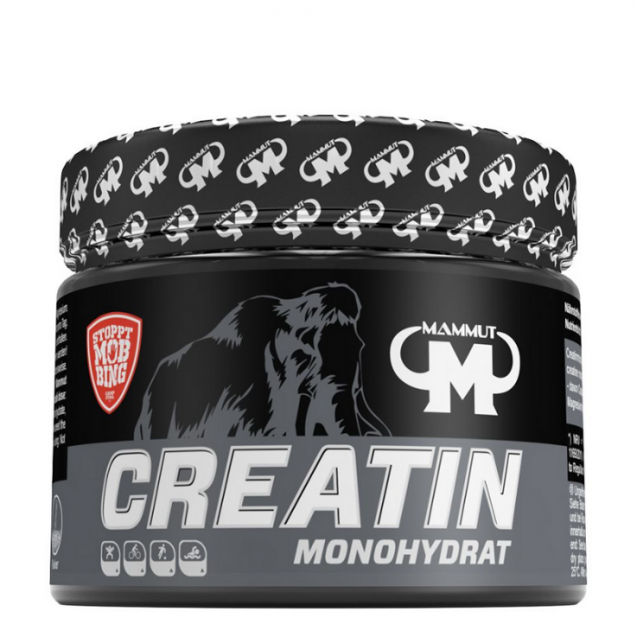

Tren
Mama féle Tren

Az L-karnitin a legnépszerűbb anyagcsere fokozók közé tartozik. Fő feladata a zsír (zsírsavak) eljuttatása a sejtek mitokondriumoknak nevezett erőműveibe, ahol aztán elégetve energia lesz belőle. Ennek ellenére a legjobban fizikai aktivitással és megfelelően összeállított étrenddel együtt működik.
12995 Ft
Finom Tren
Az Appetite Control mindazoknak szól, akik hatékonyan szeretnének fogyni, és szabályozni akarják állandó éhségérzetüket, valamint az édes és sós ételek iránti sóvárgásukat. Az összetevők között szerepel például egy fehérbab-kivonat, amely bizonyított szénhidrátblokkolóként ismert. Mindemellett tartalmazza a természetes HCA zsírégetőt és krómot is, amely pozitívan befolyásolja a normál vércukorszint fenntartását.
7545 Ft
Sima Tren

A The Ripper egy finom ízű nagyon erős és hatékony zsírégető. Gyorsan ható formuláját koncentrált zsírégető összetevők alkotják, melyek segítenek a zsírégetés, az éhségkontroll és a tiszta, állandó energia biztosításában.
13999 Ft
Álmodozó Tren

A Karnitin TABS az egyik legnépszerűbb anyagcsere fokozó. Fő feladata a zsír (zsírsavak) eljuttatása a sejtek mitokondriumoknak nevezett erőműveibe, ahol aztán elégetve energia lesz belőle. Ennek ellenére a legjobban fizikai aktivitással és megfelelően összeállított étrenddel együtt működik.
5000 Ft
Bika Tren

A Lipo 6 Black Ultra concentrate egy forradalmian új zsírégető, mely hozzásegít a rohamos és gyors zsírégetéshez. Olyan egyedülálló anyagot tartalmaz, amely erősíti a hatékonyságát, és ezenkívül ez a zsírégető még hosszabb szedés után sem hagy alább a hatékonyságával. A hatékonyságát és teljesítményét a gyors zsírlebontásnak köszönheti.
22899 Ft
Szeretet Tren

Az Animal Cuts egy komplex anyagcsere fokozó, amely számos növényi kivonatot tartalmaz, köztük koffeint, nootropikumokat és adaptogéneket, valamint más, a kiváló minőségű anyagcsere fokozókban népszerű összetevőket. Ezeket az anyagokat nyolc funkcionális komplexbe csoportosítják. Az Animal Cuts tehát egy nagyszerű kiegészítő, amely fogyókúra alatt is használható.